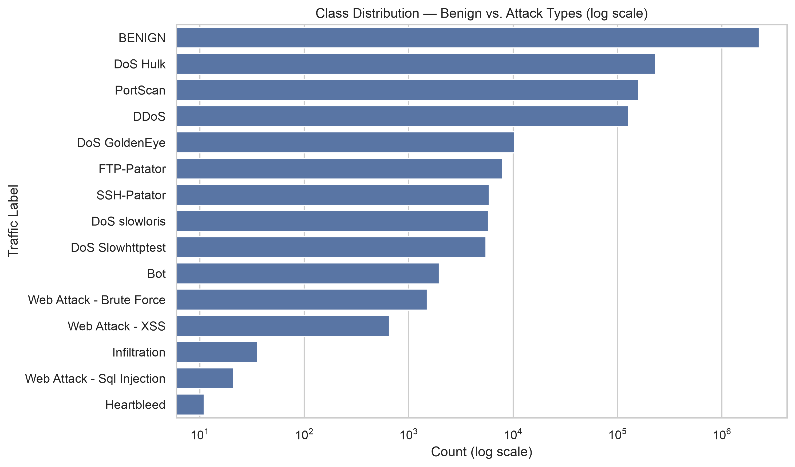
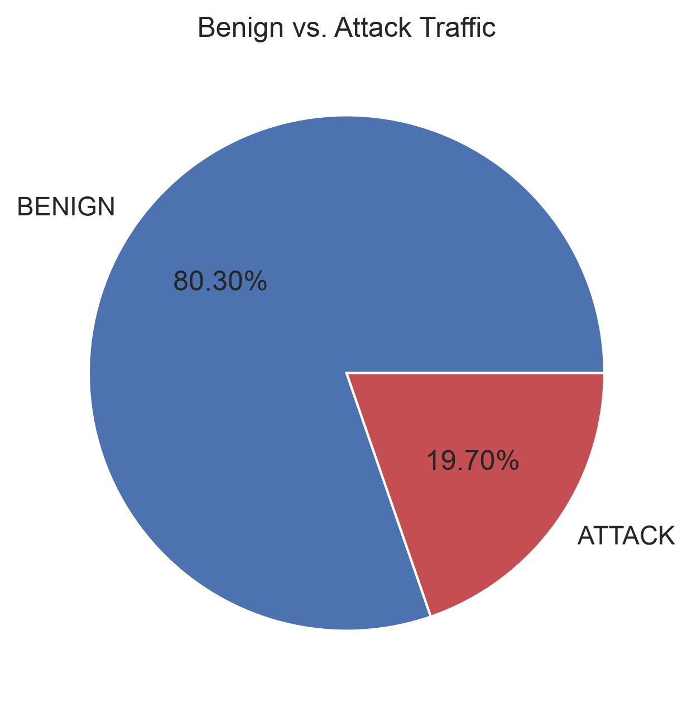
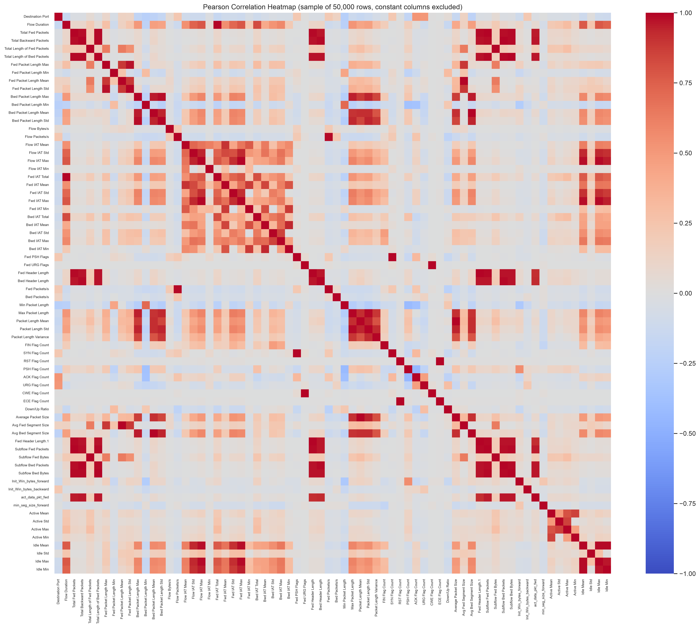
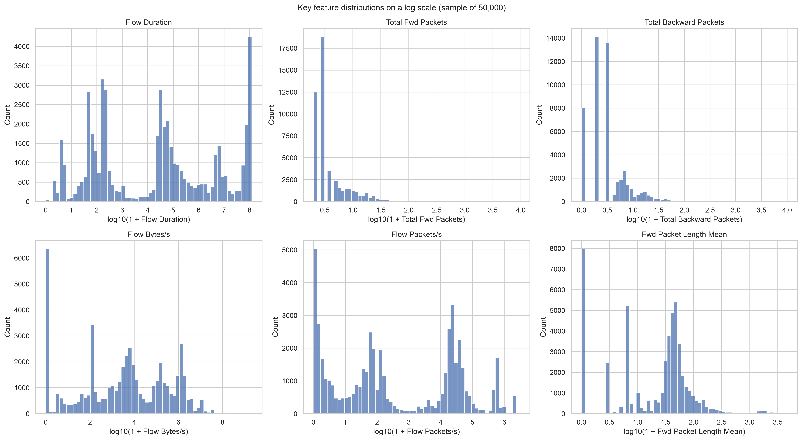
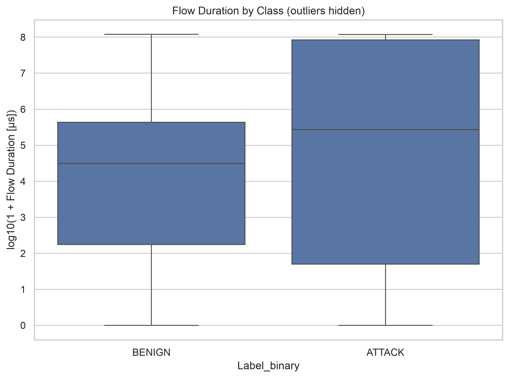
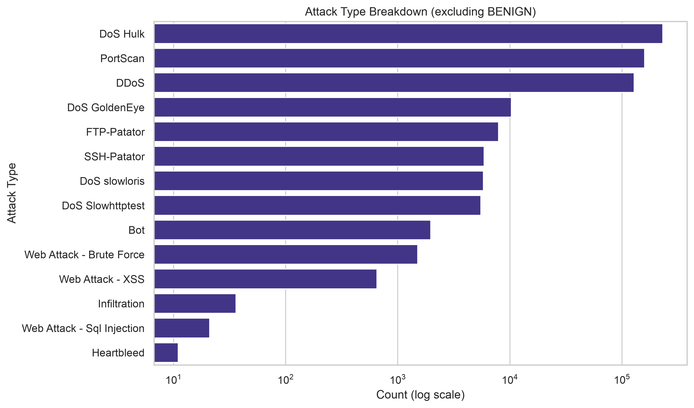
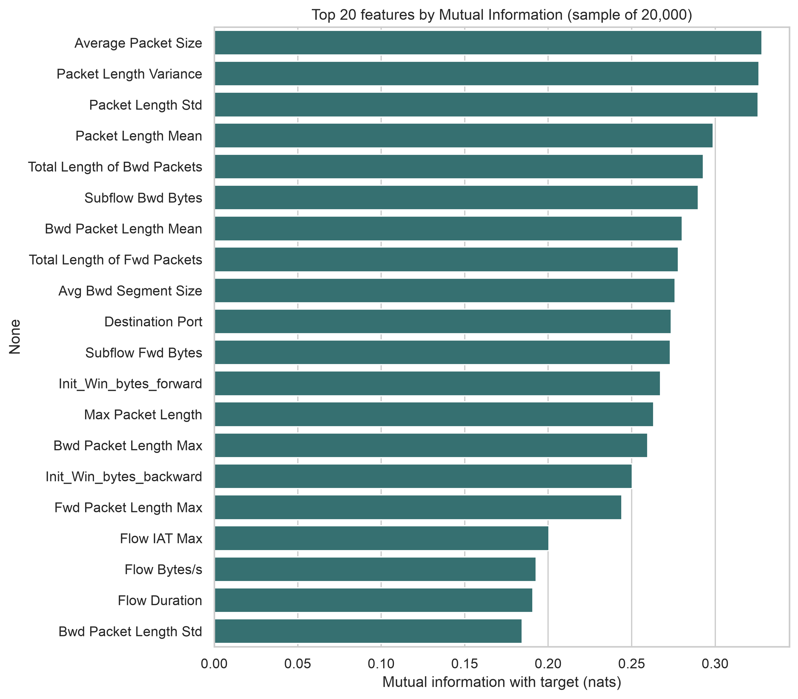

Tables: select a table, copy it and paste it into Word or Google Docs. Figures: right-click an image and copy it, or insert the PNG files from the figures/ folder.
| item | raw_missing_count |
|---|---|
| Flow Bytes/s | 1358 |
| item | infinite_count |
|---|---|
| Flow Bytes/s | 1509 |
| Flow Packets/s | 2867 |
| Label | pct_of_duplicated_rows |
|---|---|
| BENIGN | 58.564 |
| PortScan | 25.165 |
| DoS Hulk | 14.73 |
| SSH-Patator | 0.699 |
| FTP-Patator | 0.607 |
| DoS slowloris | 0.126 |
| DoS Slowhttptest | 0.08 |
| Web Attack � Brute Force | 0.015 |
| DDoS | 0.005 |
| Bot | 0.005 |
| DoS GoldenEye | 0.003 |
| metric | value | pct_of_rows |
|---|---|---|
| Full-row duplicates | 256479 | 9.06048 |
| Feature-level duplicates | 309079 | 10.9187 |
| Duplicate feature groups | 95479 | |
| Groups with conflicting labels | 698 | |
| Rows in conflicting groups | 7020 | 0.247991 |
| column | negative_count | negative_pct | min_value | distinct_negative_values | attack_share_of_negatives_pct |
|---|---|---|---|---|---|
| Init_Win_bytes_backward | 1441552 | 50.9249 | -1 | 1 | 8.50271 |
| Init_Win_bytes_forward | 1001189 | 35.3684 | -1 | 1 | 0.000699169 |
| Flow IAT Min | 2891 | 0.102129 | -14 | 12 | 6.71048 |
| Flow Duration | 115 | 0.00406254 | -13 | 5 | 0 |
| Flow Packets/s | 115 | 0.00406254 | -2,000,000 | 5 | 0 |
| Flow IAT Mean | 115 | 0.00406254 | -13 | 5 | 0 |
| Flow IAT Max | 115 | 0.00406254 | -13 | 5 | 0 |
| Flow Bytes/s | 85 | 0.00300275 | -261,000,000 | 9 | 0 |
| Fwd Header Length | 35 | 0.00123642 | -32,212,234,632 | 27 | 0 |
| Fwd Header Length.1 | 35 | 0.00123642 | -32,212,234,632 | 27 | 0 |
| min_seg_size_forward | 35 | 0.00123642 | -536,870,661 | 4 | 0 |
| Bwd Header Length | 22 | 0.000777181 | -1,073,741,320 | 17 | 0 |
| Fwd IAT Min | 17 | 0.000600549 | -12 | 3 | 100 |
| item | missing_count | missing_pct |
|---|---|---|
| Flow Packets/s | 2982 | 0.105343 |
| Flow Bytes/s | 2952 | 0.104284 |
| Flow IAT Min | 2891 | 0.102129 |
| Flow Duration | 115 | 0.00406254 |
| Flow IAT Mean | 115 | 0.00406254 |
| Flow IAT Max | 115 | 0.00406254 |
| Fwd Header Length | 35 | 0.00123642 |
| Fwd Header Length.1 | 35 | 0.00123642 |
| min_seg_size_forward | 35 | 0.00123642 |
| Bwd Header Length | 22 | 0.000777181 |
| Fwd IAT Min | 17 | 0.000600549 |
| constant_column |
|---|
| Bwd PSH Flags |
| Bwd URG Flags |
| Fwd Avg Bytes/Bulk |
| Fwd Avg Packets/Bulk |
| Fwd Avg Bulk Rate |
| Bwd Avg Bytes/Bulk |
| Bwd Avg Packets/Bulk |
| Bwd Avg Bulk Rate |
| kept_column | duplicate_column |
|---|---|
| Total Fwd Packets | Subflow Fwd Packets |
| Total Backward Packets | Subflow Bwd Packets |
| Fwd PSH Flags | SYN Flag Count |
| Fwd URG Flags | CWE Flag Count |
| Fwd Header Length | Fwd Header Length.1 |
| Label | count | percent |
|---|---|---|
| BENIGN | 2273097 | 80.3 |
| DoS Hulk | 231073 | 8.163 |
| PortScan | 158930 | 5.614 |
| DDoS | 128027 | 4.523 |
| DoS GoldenEye | 10293 | 0.364 |
| FTP-Patator | 7938 | 0.28 |
| SSH-Patator | 5897 | 0.208 |
| DoS slowloris | 5796 | 0.205 |
| DoS Slowhttptest | 5499 | 0.194 |
| Bot | 1966 | 0.069 |
| Web Attack - Brute Force | 1507 | 0.053 |
| Web Attack - XSS | 652 | 0.023 |
| Infiltration | 36 | 0.001 |
| Web Attack - Sql Injection | 21 | 0.001 |
| Heartbleed | 11 | 0 |
| Label_binary | count |
|---|---|
| BENIGN | 2273097 |
| ATTACK | 557646 |
| feature_1 | feature_2 | correlation | abs_correlation |
|---|---|---|---|
| Fwd Packet Length Mean | Avg Fwd Segment Size | 1 | 1 |
| Fwd URG Flags | CWE Flag Count | 1 | 1 |
| Fwd PSH Flags | SYN Flag Count | 1 | 1 |
| Fwd Header Length | Fwd Header Length.1 | 1 | 1 |
| Total Fwd Packets | Subflow Fwd Packets | 1 | 1 |
| Total Backward Packets | Subflow Bwd Packets | 1 | 1 |
| Bwd Packet Length Mean | Avg Bwd Segment Size | 1 | 1 |
| Total Length of Fwd Packets | Subflow Fwd Bytes | 1 | 1 |
| RST Flag Count | ECE Flag Count | 1 | 1 |
| Total Length of Bwd Packets | Subflow Bwd Bytes | 1 | 1 |
| Flow Duration | Fwd IAT Total | 0.998208 | 0.998208 |
| Packet Length Mean | Average Packet Size | 0.997812 | 0.997812 |
| Flow IAT Max | Fwd IAT Max | 0.997353 | 0.997353 |
| Subflow Bwd Packets | Subflow Bwd Bytes | 0.991797 | 0.991797 |
| Total Backward Packets | Subflow Bwd Bytes | 0.991797 | 0.991797 |
| Total Backward Packets | Total Length of Bwd Packets | 0.991797 | 0.991797 |
| Total Length of Bwd Packets | Subflow Bwd Packets | 0.991797 | 0.991797 |
| Bwd Header Length | Subflow Bwd Packets | 0.990906 | 0.990906 |
| Total Backward Packets | Bwd Header Length | 0.990906 | 0.990906 |
| Total Fwd Packets | Fwd Header Length.1 | 0.990569 | 0.990569 |
| Total Fwd Packets | Fwd Header Length | 0.990569 | 0.990569 |
| Fwd Header Length.1 | Subflow Fwd Packets | 0.990569 | 0.990569 |
| Fwd Header Length | Subflow Fwd Packets | 0.990569 | 0.990569 |
| Flow IAT Max | Idle Max | 0.990515 | 0.990515 |
| Idle Mean | Idle Max | 0.990489 | 0.990489 |
| Idle Mean | Idle Min | 0.990319 | 0.990319 |
| Flow Packets/s | Fwd Packets/s | 0.989684 | 0.989684 |
| Fwd IAT Max | Idle Max | 0.988655 | 0.988655 |
| Total Fwd Packets | Total Length of Bwd Packets | 0.986374 | 0.986374 |
| Total Length of Bwd Packets | Subflow Fwd Packets | 0.986374 | 0.986374 |
| Subflow Fwd Packets | Subflow Bwd Bytes | 0.986372 | 0.986372 |
| Total Fwd Packets | Subflow Bwd Bytes | 0.986372 | 0.986372 |
| Max Packet Length | Packet Length Std | 0.98474 | 0.98474 |
| Subflow Fwd Packets | Subflow Bwd Packets | 0.983949 | 0.983949 |
| Total Fwd Packets | Subflow Bwd Packets | 0.983949 | 0.983949 |
| Total Fwd Packets | Total Backward Packets | 0.983949 | 0.983949 |
| Total Backward Packets | Subflow Fwd Packets | 0.983949 | 0.983949 |
| Bwd Packet Length Max | Bwd Packet Length Std | 0.982431 | 0.982431 |
| Flow IAT Max | Idle Mean | 0.981123 | 0.981123 |
| Fwd IAT Max | Idle Mean | 0.978444 | 0.978444 |
| Total Length of Bwd Packets | Bwd Header Length | 0.975555 | 0.975555 |
| Bwd Header Length | Subflow Bwd Bytes | 0.975555 | 0.975555 |
| Total Length of Bwd Packets | Fwd Header Length | 0.971058 | 0.971058 |
| Total Length of Bwd Packets | Fwd Header Length.1 | 0.971058 | 0.971058 |
| Fwd Header Length.1 | Subflow Bwd Bytes | 0.971056 | 0.971056 |
| Fwd Header Length | Subflow Bwd Bytes | 0.971056 | 0.971056 |
| Fwd Packet Length Max | Fwd Packet Length Std | 0.970857 | 0.970857 |
| Fwd Header Length.1 | Subflow Bwd Packets | 0.969612 | 0.969612 |
| Total Backward Packets | Fwd Header Length | 0.969612 | 0.969612 |
| Fwd Header Length | Subflow Bwd Packets | 0.969612 | 0.969612 |
| Total Backward Packets | Fwd Header Length.1 | 0.969612 | 0.969612 |
| Bwd Header Length | Subflow Fwd Packets | 0.968733 | 0.968733 |
| Total Fwd Packets | Bwd Header Length | 0.968733 | 0.968733 |
| Bwd Header Length | Fwd Header Length.1 | 0.966033 | 0.966033 |
| Fwd Header Length | Bwd Header Length | 0.966033 | 0.966033 |
| Subflow Bwd Bytes | act_data_pkt_fwd | 0.966022 | 0.966022 |
| Total Length of Bwd Packets | act_data_pkt_fwd | 0.96602 | 0.96602 |
| Subflow Bwd Packets | act_data_pkt_fwd | 0.963554 | 0.963554 |
| Total Backward Packets | act_data_pkt_fwd | 0.963554 | 0.963554 |
| Idle Max | Idle Min | 0.96222 | 0.96222 |
| Bwd Packet Length Max | Bwd Packet Length Mean | 0.958618 | 0.958618 |
| Bwd Packet Length Max | Avg Bwd Segment Size | 0.958618 | 0.958618 |
| Total Fwd Packets | act_data_pkt_fwd | 0.957617 | 0.957617 |
| Subflow Fwd Packets | act_data_pkt_fwd | 0.957617 | 0.957617 |
| Flow IAT Max | Idle Min | 0.953175 | 0.953175 |
| Fwd IAT Max | Idle Min | 0.949684 | 0.949684 |
| Bwd Packet Length Max | Max Packet Length | 0.949527 | 0.949527 |
| Bwd Packet Length Std | Packet Length Std | 0.942534 | 0.942534 |
| Packet Length Std | Average Packet Size | 0.942136 | 0.942136 |
| Packet Length Mean | Packet Length Std | 0.941731 | 0.941731 |
| Bwd Packet Length Max | Packet Length Std | 0.940388 | 0.940388 |
| Flow IAT Std | Flow IAT Max | 0.939679 | 0.939679 |
| Bwd Packet Length Mean | Bwd Packet Length Std | 0.939046 | 0.939046 |
| Bwd Packet Length Std | Avg Bwd Segment Size | 0.939046 | 0.939046 |
| Flow IAT Std | Fwd IAT Max | 0.937228 | 0.937228 |
| Flow IAT Std | Idle Max | 0.936521 | 0.936521 |
| Bwd Packet Length Std | Max Packet Length | 0.933383 | 0.933383 |
| Flow IAT Std | Idle Mean | 0.932239 | 0.932239 |
| Bwd IAT Mean | Bwd IAT Min | 0.930593 | 0.930593 |
| Bwd Header Length | act_data_pkt_fwd | 0.925853 | 0.925853 |
| Packet Length Std | Packet Length Variance | 0.922004 | 0.922004 |
| Fwd IAT Std | Fwd IAT Max | 0.92078 | 0.92078 |
| Packet Length Mean | Avg Bwd Segment Size | 0.919579 | 0.919579 |
| Bwd Packet Length Mean | Packet Length Mean | 0.919579 | 0.919579 |
| Bwd Packet Length Mean | Packet Length Std | 0.91927 | 0.91927 |
| Packet Length Std | Avg Bwd Segment Size | 0.91927 | 0.91927 |
| Fwd Header Length.1 | act_data_pkt_fwd | 0.919154 | 0.919154 |
| Fwd Header Length | act_data_pkt_fwd | 0.919154 | 0.919154 |
| Flow IAT Max | Fwd IAT Std | 0.917818 | 0.917818 |
| Fwd IAT Std | Idle Max | 0.916915 | 0.916915 |
| Max Packet Length | Packet Length Mean | 0.916843 | 0.916843 |
| Average Packet Size | Avg Bwd Segment Size | 0.913815 | 0.913815 |
| Bwd Packet Length Mean | Average Packet Size | 0.913815 | 0.913815 |
| Max Packet Length | Average Packet Size | 0.912115 | 0.912115 |
| Flow IAT Std | Idle Min | 0.909931 | 0.909931 |
| Fwd IAT Std | Idle Mean | 0.906337 | 0.906337 |
| Bwd Packet Length Mean | Max Packet Length | 0.905873 | 0.905873 |
| Max Packet Length | Avg Bwd Segment Size | 0.905873 | 0.905873 |
| Flow IAT Mean | Fwd IAT Mean | 0.904901 | 0.904901 |
| feature | skewness | min | median | 95th_percentile | 99th_percentile | max |
|---|---|---|---|---|---|---|
| Total Fwd Packets | 104.808 | 1 | 2 | 19 | 50 | 9,449 |
| Total Backward Packets | 97.7283 | 0 | 2 | 17 | 58 | 10,063 |
| Flow Bytes/s | 49.6933 | 0 | 4,610 | 2,261,171 | 12,333,333 | 2,070,000,000 |
| Fwd Packet Length Mean | 9.26745 | 0 | 34 | 143.003 | 1,036 | 4,672 |
| Flow Packets/s | 5.52508 | 0.0169631 | 113.915 | 666,667 | 2,000,000 | 3,000,000 |
| Flow Duration | 2.16918 | 0 | 31,288 | 101,162,713 | 117,814,989 | 119,999,443 |
| Label_binary | count | min | Q1 | median | Q3 | max | IQR |
|---|---|---|---|---|---|---|---|
| ATTACK | 9807 | 0 | 49 | 272,843 | 84,007,264 | 118,353,342 | 84,007,216 |
| BENIGN | 40190 | 0 | 173 | 31,011 | 433,628 | 119,999,443 | 433,454 |
| Label | count | pct_of_attacks | pct_of_dataset |
|---|---|---|---|
| DoS Hulk | 231073 | 41.437 | 8.163 |
| PortScan | 158930 | 28.5 | 5.6144 |
| DDoS | 128027 | 22.958 | 4.5227 |
| DoS GoldenEye | 10293 | 1.846 | 0.3636 |
| FTP-Patator | 7938 | 1.423 | 0.2804 |
| SSH-Patator | 5897 | 1.057 | 0.2083 |
| DoS slowloris | 5796 | 1.039 | 0.2048 |
| DoS Slowhttptest | 5499 | 0.986 | 0.1943 |
| Bot | 1966 | 0.353 | 0.0695 |
| Web Attack - Brute Force | 1507 | 0.27 | 0.0532 |
| Web Attack - XSS | 652 | 0.117 | 0.023 |
| Infiltration | 36 | 0.006 | 0.0013 |
| Web Attack - Sql Injection | 21 | 0.004 | 0.0007 |
| Heartbleed | 11 | 0.002 | 0.0004 |
| Label | Friday-WorkingHours-Afternoon-DDos | Friday-WorkingHours-Afternoon-PortScan | Friday-WorkingHours-Morning | Monday-WorkingHours | Thursday-WorkingHours-Afternoon-Infilteration | Thursday-WorkingHours-Morning-WebAttacks | Tuesday-WorkingHours | Wednesday-workingHours |
|---|---|---|---|---|---|---|---|---|
| BENIGN | 97718 | 127537 | 189067 | 529918 | 288566 | 168186 | 432074 | 440031 |
| Bot | 0 | 0 | 1966 | 0 | 0 | 0 | 0 | 0 |
| DDoS | 128027 | 0 | 0 | 0 | 0 | 0 | 0 | 0 |
| DoS GoldenEye | 0 | 0 | 0 | 0 | 0 | 0 | 0 | 10293 |
| DoS Hulk | 0 | 0 | 0 | 0 | 0 | 0 | 0 | 231073 |
| DoS Slowhttptest | 0 | 0 | 0 | 0 | 0 | 0 | 0 | 5499 |
| DoS slowloris | 0 | 0 | 0 | 0 | 0 | 0 | 0 | 5796 |
| FTP-Patator | 0 | 0 | 0 | 0 | 0 | 0 | 7938 | 0 |
| Heartbleed | 0 | 0 | 0 | 0 | 0 | 0 | 0 | 11 |
| Infiltration | 0 | 0 | 0 | 0 | 36 | 0 | 0 | 0 |
| PortScan | 0 | 158930 | 0 | 0 | 0 | 0 | 0 | 0 |
| SSH-Patator | 0 | 0 | 0 | 0 | 0 | 0 | 5897 | 0 |
| Web Attack - Brute Force | 0 | 0 | 0 | 0 | 0 | 1507 | 0 | 0 |
| Web Attack - Sql Injection | 0 | 0 | 0 | 0 | 0 | 21 | 0 | 0 |
| Web Attack - XSS | 0 | 0 | 0 | 0 | 0 | 652 | 0 | 0 |
| Label | top_port | top_port_share_pct | distinct_ports |
|---|---|---|---|
| DoS GoldenEye | 80 | 100 | 1 |
| DoS Hulk | 80 | 100 | 1 |
| DoS Slowhttptest | 80 | 100 | 1 |
| DoS slowloris | 80 | 100 | 1 |
| Heartbleed | 444 | 100 | 1 |
| Infiltration | 444 | 100 | 1 |
| SSH-Patator | 22 | 100 | 1 |
| Web Attack - Brute Force | 80 | 100 | 1 |
| Web Attack - Sql Injection | 80 | 100 | 1 |
| Web Attack - XSS | 80 | 100 | 1 |
| DDoS | 80 | 100 | 4 |
| FTP-Patator | 21 | 99.99 | 2 |
| Bot | 8080 | 64.14 | 706 |
| PortScan | 80 | 0.23 | 1000 |
| Label_binary | Init_Win_bytes_forward | Init_Win_bytes_backward |
|---|---|---|
| ATTACK | 0 | 21.98 |
| BENIGN | 44.04 | 58.03 |
| feature | mutual_information |
|---|---|
| Average Packet Size | 0.328026 |
| Packet Length Variance | 0.326223 |
| Packet Length Std | 0.325752 |
| Packet Length Mean | 0.298735 |
| Total Length of Bwd Packets | 0.293004 |
| Subflow Bwd Bytes | 0.289906 |
| Bwd Packet Length Mean | 0.280333 |
| Total Length of Fwd Packets | 0.277942 |
| Avg Bwd Segment Size | 0.276069 |
| Destination Port | 0.27366 |
| Subflow Fwd Bytes | 0.273172 |
| Init_Win_bytes_forward | 0.267291 |
| Max Packet Length | 0.263124 |
| Bwd Packet Length Max | 0.259568 |
| Init_Win_bytes_backward | 0.250328 |
| Fwd Packet Length Max | 0.244034 |
| Flow IAT Max | 0.200465 |
| Flow Bytes/s | 0.192714 |
| Flow Duration | 0.190881 |
| Bwd Packet Length Std | 0.184413 |






